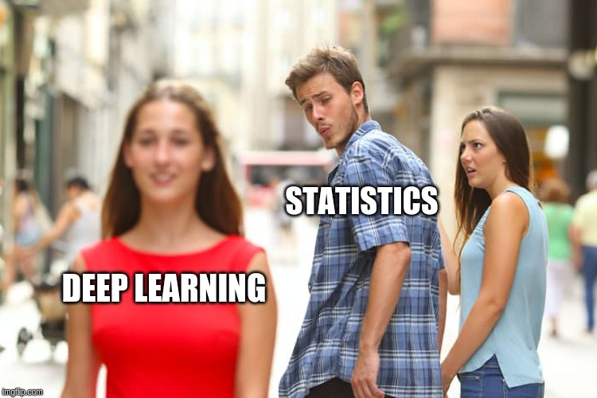
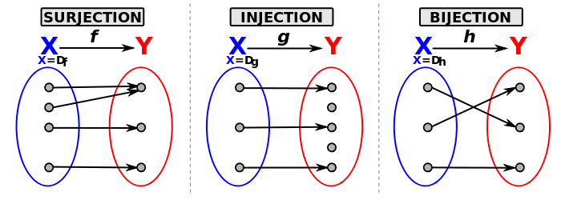

Jeff Pollock, QuantBet
\[ P(Y, \theta) = P(Y | \theta) P(\theta) \propto P(\theta | Y) \]
For observed data \(Y\) and model parameters \(\theta\).
\(\implies P(Y, \beta, \sigma) = P(Y | \beta, \sigma) P(\beta) P(\sigma)\)
For observation \(Y\) and model parameters \(\theta = (\beta, \sigma)\).
model { coefficient ~ normal(0.0, 1.0); observation_noise_scale ~ exponential(1.0); observation ~ normal(coefficient * covariate, observation_noise_scale); }
real log_prob(vector parameters) { // model parameters real coefficient = parameters[0]; real observation_noise_scale = parameters[1]; // model body real lp = 0.0; lp += normal_log(coefficient, 0.0, 1.0); lp += exponential_log(observation_noise_scale, 1.0); lp += normal_log( observation, coefficient * covariate, observation_noise_scale); return lp; }
Note: generated C++ heavily edited
def model(): coefficient = yield Root(tfd.Normal(loc=0.0, scale=1.0)) observation_noise_scale = yield Root(tfd.Exponential(rate=1.0)) observation = yield tfd.Normal( loc=coefficient * covariate, scale=observation_noise_scale ) joint_dist = tfd.JointDistributionCoroutine(model)
import tensorflow as tf import tensorflow_probability as tfp import arviz as az
print(tf.__version__)
2.0.0
print(tfp.__version__)
0.8.0
def objective(x): return tf.sin(x) + tf.exp(x) x = 3.14 manual_grad = tf.cos(x) + tf.exp(x) value, automatic_grad = tfp.math.value_and_gradient(objective, x) print(f"manual: {manual_grad}") print(f"automatic: {automatic_grad.numpy()}")
manual: 22.103872299194336 automatic: 22.103872299194336
@benchmark(warmup=5, runs=100) def tf_matvec(mat, vec): return tf.linalg.matvec(mat, vec) @benchmark(warmup=5, runs=100) def np_matvec(mat, vec): return np.dot(mat, vec) num_data = 100_000 num_coefficients = 100 design_matrix = tf.random.normal([num_data, num_coefficients]) coefficients = tf.random.normal([num_coefficients]) np.testing.assert_allclose( tf_matvec(design_matrix, coefficients), np_matvec(design_matrix.numpy(), coefficients.numpy()), atol=1e-5, )
100 runs of tf_matvec took 0.0141 seconds 100 runs of np_matvec took 0.1190 seconds
with tf.device("/CPU:0"): design_matrix = tf.random.normal([num_data, num_coefficients]) coefficients = tf.random.normal([num_coefficients]) _ = tf_matvec(design_matrix, coefficients), with tf.device("/GPU:0"): design_matrix = tf.random.normal([num_data, num_coefficients]) coefficients = tf.random.normal([num_coefficients]) _ = tf_matvec(design_matrix, coefficients),
100 runs of tf_matvec took 0.2639 seconds 100 runs of tf_matvec took 0.0073 seconds

Key ingredients for a probabilistic programming language:
tfp.distributionstfp.mcmc, tfp.vi, tfp.optimizer
Some extra goodies: tfp.bijectors, tfp.glm, tfp.sts, tfp.layers
The building blocks of our model specification.
dist = tfd.Normal(loc=0.0, scale=1.0)
sample = dist.sample(3) print(sample)
tf.Tensor([-0.20061125 -1.2735859 0.48410097], shape=(3,), dtype=float32)
print(dist.log_prob(sample))
tf.Tensor([-0.9390609 -1.729949 -1.0361154], shape=(3,), dtype=float32)
dist = tfd.Normal(loc=[0.0, 10.0], scale=1.0)
sample = dist.sample(3) print(sample)
tf.Tensor( [[ 1.1442095 8.391022 ] [-1.347222 9.383066 ] [ 0.8454657 10.157462 ]], shape=(3, 2), dtype=float32)
print(dist.log_prob(sample))
tf.Tensor( [[-1.5735462 -2.213344 ] [-1.826442 -1.1092422] [-1.2763447 -0.9313357]], shape=(3, 2), dtype=float32)
tfd.IndependentThis distribution is useful for regarding a collection of independent, non-identical distributions as a single random variable.
batch_dist = tfd.Normal(loc=[0.0, 1.0], scale=1.0)
print_shapes(batch_dist)
batch: (2,), event: ()
event_dist = tfd.Independent(batch_dist, reinterpreted_batch_ndims=1)
print_shapes(event_dist)
batch: (), event: (2,)
tfd.Independenty = [1.5, 4.2]
print(batch_dist.log_prob(y))
tf.Tensor([-2.0439386 -6.038938 ], shape=(2,), dtype=float32)
print(event_dist.log_prob(y))
tf.Tensor(-8.082876, shape=(), dtype=float32)
\(P(Sco=x, Eng=y) = P(Sco=x) P(Eng=y)\)
scotland_rate = 2.0 england_rate = 0.5 batched_dist = tfd.Poisson(rate=[scotland_rate, england_rate]) bivariate_dist = tfd.Independent(batched_dist, reinterpreted_batch_ndims=1) print(bivariate_dist.sample(3))
tf.Tensor( [[6. 0.] [3. 0.] [1. 0.]], shape=(3, 2), dtype=float32)
scores = [[[0, 0], [0, 1], [0, 2]], [[1, 0], [1, 1], [1, 2]], [[2, 0], [2, 1], [2, 2]]] probs = bivariate_dist.prob(scores) print(probs)
tf.Tensor( [[0.08208499 0.0410425 0.01026062] [0.16416998 0.08208499 0.02052125] [0.16416998 0.08208499 0.02052125]], shape=(3, 3), dtype=float32)
max_goals = 20 scores = [[[i, j] for j in range(max_goals)] for i in range(max_goals)] probs = bivariate_dist.prob(scores) scotland = np.tril(probs, k=-1).sum() draw = np.diag(probs).sum() england = np.triu(probs, k=1).sum() print(f"Scotland: {scotland:.4f}, Draw: {draw:.4f}, England: {england:.4f}")
Scotland: 0.7310, Draw: 0.1871, England: 0.0819
Root = tfd.JointDistributionCoroutine.Root def model(): scotland_log_rate = yield Root(tfd.Normal(loc=2.0, scale=1.0)) england_log_rate = yield Root(tfd.Normal(loc=0.5, scale=1.0)) log_rates = tf.stack([scotland_log_rate, england_log_rate], axis=-1) goals = yield tfd.Independent( tfd.Poisson(log_rate=log_rates), reinterpreted_batch_ndims=1 ) joint_dist = tfd.JointDistributionCoroutine(model)
scotland_log_rates, england_log_rates, goals = joint_dist.sample(3)
print(scotland_log_rates)
tf.Tensor([2.0298522 2.3707705 2.102074 ], shape=(3,), dtype=float32)
print(england_log_rates)
tf.Tensor([-0.9017575 0.35339326 3.388393 ], shape=(3,), dtype=float32)
print(goals)
tf.Tensor( [[10. 0.] [12. 0.] [ 8. 31.]], shape=(3, 2), dtype=float32)
A bijective function is a one-to-one (injective) and onto (surjective) mapping

\(f\) is a bijective function.
forward: \(f(X)\)inverse: \(f^{-1}(X)\)inverse_log_det_jacobian: \(\log \left( \left| \frac{d}{dy} f^{-1}(y) \right| \right)\)\(X \sim Normal(\mu, \sigma^{2}), \quad Y = f(X)\)
\(f(x) = \exp(x), \quad f^{-1}(x) = \log(x)\)
Taken from Stan's Prior Choice Recommendations
f = tfb.AffineScalar(shift=-1.0, scale=2.0) beta = tfd.Beta(concentration0=2.0, concentration1=2.0) correlation_dist = f(beta) y = tf.range(start=-1.0, limit=1.0, delta=1e-4) plt.hist(correlation_dist.sample(100_000), bins=50, density=True) plt.plot(y, correlation_dist.prob(y), linewidth=2.5)
Going NUTS with Stan and TensorFlow Probability
scale_x, scale_y, correlation = 4.0, 8.0, 0.75 mvn_dist = tfd.MultivariateNormalFullCovariance( loc=[0.0, 10.0], covariance_matrix=[ [scale_x**2, scale_x * scale_y * correlation], [scale_x * scale_y * correlation, scale_y**2], ], )
print_shapes(mvn_dist)
batch: (), event: (2,)
print(mvn_dist.sample(3))
tf.Tensor( [[-0.9434234 10.352297 ] [ 2.6398509 20.04413 ] [ 3.2340534 25.358845 ]], shape=(3, 2), dtype=float32)
samples = mvn_dist.sample(10_000) az.plot_joint({"x": samples[:, 0], "y": samples[:, 1]}, kind="kde")
data { vector[2] location; cov_matrix[2] covariance; } transformed data { cholesky_factor_cov[2] covariance_tril = cholesky_decompose(covariance); } parameters { vector[2] x; } model { x ~ multi_normal_cholesky(location, covariance_tril); }
stan_model = pystan.StanModel( stan_mvn, extra_compile_args=["-O3", "-march=native", "-ffast-math"] ) stan_data = { "location": mvn_dist.mean().numpy(), "covariance": mvn_dist.covariance().numpy(), } with Timer() as stan_timer: stan_fit = stan_model.sampling(data=stan_data, chains=6)
print(f"Stan took {stan_timer.duration:.4f} seconds")
Stan took 0.4984 seconds
def foo(x): return x * x * x * x def bar(x): x2 = x * x return x2 * x2 x = 1.123456789123456789 print(f"foo(x)={foo(x):.15f}") print(f"bar(x)={bar(x):.15f}")
foo(x)=1.593035640411334 bar(x)=1.593035640411333
see godbolt.org
def step_size_setter_fn(pkr, new_step_size): return pkr._replace(step_size=new_step_size) def step_size_getter_fn(pkr): return pkr.step_size def log_accept_prob_getter_fn(pkr): return pkr.log_accept_ratio
initial_state = tf.random.uniform([2**15, 2], minval=-2.0, maxval=2.0) @tf.function(autograph=False) def run_mcmc(): nuts = tfp.mcmc.NoUTurnSampler(mvn_dist.log_prob, step_size=[[1.0, 1.0]]) adaptive_nuts = tfp.mcmc.DualAveragingStepSizeAdaptation( inner_kernel=nuts, num_adaptation_steps=800, target_accept_prob=0.8, step_size_setter_fn=step_size_setter_fn, step_size_getter_fn=step_size_getter_fn, log_accept_prob_getter_fn=log_accept_prob_getter_fn, ) return tfp.mcmc.sample_chain( num_results=1_000, current_state=initial_state, num_burnin_steps=1_000, kernel=adaptive_nuts, trace_fn=None, )
with Timer() as tfp_timer: [tfp_samples] = tf.xla.experimental.compile(run_mcmc) print(f"TFP took {tfp_timer.duration:.4f} seconds")
TFP took 18.9659 seconds
dist_samples = mvn_dist.sample(10_000) stan_samples = stan_fit.extract("x")["x"] tfp_samples = tf.reshape(tfp_samples, [-1, 2]) _, ax = plt.subplots(1, 3, sharex="col", sharey="row") ax[0].scatter(dist_samples[:, 0], dist_samples[:, 1], alpha=0.1) ax[0].set_title("truth") ax[1].scatter(tfp_samples[::10_000, 0], tfp_samples[::10_000, 1], alpha=0.1) ax[1].set_title("TFP NUTS") ax[2].scatter(stan_samples[:, 0], stan_samples[:, 1], alpha=0.1) ax[2].set_title("Stan NUTS")
Approximate \(P(\theta | Y)\) with a variational distribution \(Q(\theta | \phi)\) parameterised via some variational parameters \(\phi\).
with Timer() as stan_timer: stan_vi = stan_model.vb(data=stan_data, output_samples=10_000)
print(f"Stan took {stan_timer.duration:.4f} seconds")
Stan took 0.0712 seconds
class VariationalState: def __init__(self): self.optimizer = tf.optimizers.Adam(learning_rate=0.1) self.loc = tf.Variable([0.0, 0.0]) self.log_scale = tf.Variable([0.0, 0.0]) state = VariationalState() def surrogate_model(): x = yield Root(tfd.Normal(state.loc[0], tf.math.exp(state.log_scale[0]))) y = yield Root(tfd.Normal(state.loc[1], tf.math.exp(state.log_scale[1]))) surrogate_dist = tfd.JointDistributionCoroutine(surrogate_model)
def target_log_prob_fn(x, y): return mvn_dist.log_prob(tf.stack([x, y], axis=-1)) @tf.function(autograph=False) def run_vi(): return tfp.vi.fit_surrogate_posterior( target_log_prob_fn, surrogate_posterior=surrogate_dist, optimizer=state.optimizer, num_steps=1_000, sample_size=1, ) with Timer() as tfp_timer: [elbo_loss] = tf.xla.experimental.compile(run_vi) print(f"TFP took {tfp_timer.duration:.4f} seconds")
TFP took 1.4777 seconds
plt.plot(elbo_loss) plt.xlabel("iteration") plt.ylabel("ELBO loss")
surrogate_samples = surrogate_dist.sample(10_000) vb_samples = stan_vi["sampler_params"][:2] _, ax = plt.subplots(1, 3, sharex="col", sharey="row") ax[0].scatter(dist_samples[:, 0], dist_samples[:, 1], alpha=0.1) ax[0].set_title("truth") ax[1].scatter(surrogate_samples[0], surrogate_samples[1], alpha=0.1) ax[1].set_title("TFP VI") ax[2].scatter(vb_samples[0], vb_samples[1], alpha=0.1) ax[2].set_title("Stan VI")
with Timer() as stan_timer: stan_opt = stan_model.optimizing(data=stan_data)
print(f"Stan found {stan_opt['x']}") print(f"Stan took {stan_timer.duration:.4f} seconds")
Stan found [-2.91194114e-05 9.99992619e+00] Stan took 0.0006 seconds
def objective(x): return -mvn_dist.log_prob(x) with Timer() as tfp_timer: tfp_opt = tfp.optimizer.bfgs_minimize( lambda x: tfp.math.value_and_gradient(objective, x), initial_position=tf.zeros([2]), ) print(f"TFP found {tfp_opt.position.numpy()}") print(f"TFP took {tfp_timer.duration:.4f} seconds")
TFP found [ 0. 10.] TFP took 0.1038 seconds
print(mvn_dist.covariance().numpy())
[[16. 24.] [24. 64.]]
print(tfp_opt.inverse_hessian_estimate.numpy())
[[16.000002 24.000004] [24.000004 64. ]]
English data taken from www.football-data.co.uk
print(df.sample(5))
home_team away_team home_goals away_goals
5372 Barnsley QPR 2 3
3305 Everton Fulham 1 0
11130 Brentford Preston 1 1
6587 Middlesbrough Nott'm Forest 3 0
1793 Swansea Newcastle 0 2
print(f"{len(df)} matches")
13788 matches
teams = pd.concat([df["home_team"], df["away_team"]]).unique() print(f"{len(teams)} teams")
88 teams
data { int<lower = 1> num_data; int<lower = 2> num_teams; int<lower = 1, upper = num_teams> home_team[num_data]; int<lower = 1, upper = num_teams> away_team[num_data]; int<lower = 0> home_goals[num_data]; int<lower = 0> away_goals[num_data]; } parameters { real intercept; real home_advantage; real<lower = 0.0> team_scale; vector[num_teams] attack; vector[num_teams] defence; } model { vector[num_data] home_log_rate = intercept + home_advantage + attack[home_team] + defence[away_team]; vector[num_data] away_log_rate = intercept + attack[away_team] + defence[home_team]; intercept ~ std_normal(); home_advantage ~ std_normal(); team_scale ~ exponential(1.0); attack ~ normal(0.0, team_scale); defence ~ normal(0.0, team_scale); home_goals ~ poisson_log(home_log_rate); away_goals ~ poisson_log(away_log_rate); }
stan_model = pystan.StanModel( stan_football, extra_compile_args=["-O3", "-march=native", "-ffast-math"] ) football_data = { "num_data": len(df), "num_teams": len(teams), "home_team": pd.Categorical(df["home_team"], categories=teams).codes + 1, "away_team": pd.Categorical(df["away_team"], categories=teams).codes + 1, "home_goals": df["home_goals"], "away_goals": df["away_goals"], } with Timer() as stan_timer: stan_fit = stan_model.sampling(data=football_data, chains=6)
print(f"Stan took {stan_timer.duration:.4f} seconds")
Stan took 206.3699 seconds
az_stan = az.from_pystan( stan_fit, coords={"teams": teams}, dims={"attack": ["teams"], "defence": ["teams"]}, ) print(az.summary(az_stan).filter(items=az_summary_items))
mean sd hpd_3% hpd_97% ess_bulk r_hat
intercept 0.142 0.032 0.079 0.200 522.0 1.01
home_advantage 0.227 0.010 0.208 0.247 13130.0 1.00
team_scale 0.212 0.014 0.186 0.237 5417.0 1.00
attack[0] 0.054 0.053 -0.047 0.151 2678.0 1.00
attack[1] 0.066 0.048 -0.024 0.156 2215.0 1.00
... ... ... ... ... ... ...
defence[83] 0.110 0.070 -0.022 0.245 4722.0 1.00
defence[84] 0.104 0.072 -0.036 0.235 5541.0 1.00
defence[85] 0.202 0.097 0.004 0.369 9069.0 1.00
defence[86] -0.063 0.105 -0.259 0.131 10242.0 1.00
defence[87] 0.043 0.155 -0.240 0.336 13115.0 1.00
[179 rows x 6 columns]
az.plot_trace(
az_stan,
var_names=["attack"],
coords={"teams": ["Man City", "Newcastle", "Scunthorpe"]},
)
num_teams = football_data["num_teams"] home_team = tf.constant(football_data["home_team"], dtype=tf.int32) - 1 away_team = tf.constant(football_data["away_team"], dtype=tf.int32) - 1
def model(): intercept = yield Root(tfd.Normal(loc=0.0, scale=1.0)) home_advantage = yield Root(tfd.Normal(loc=0.0, scale=1.0)) team_scale = yield Root(tfd.Exponential(rate=1.0)) attack = yield tfd.MultivariateNormalDiag( loc=tf.zeros(num_teams), scale_identity_multiplier=team_scale, ) defence = yield tfd.MultivariateNormalDiag( loc=tf.zeros(num_teams), scale_identity_multiplier=team_scale, ) home_log_rate = ( intercept[..., tf.newaxis] + home_advantage[..., tf.newaxis] + tf.gather(attack, home_team, axis=-1) + tf.gather(defence, away_team, axis=-1) ) away_log_rate = ( intercept[..., tf.newaxis] + tf.gather(attack, away_team, axis=-1) + tf.gather(defence, home_team, axis=-1) ) home_goals = yield tfd.Independent( tfd.Poisson(log_rate=home_log_rate), reinterpreted_batch_ndims=1 ) away_goals = yield tfd.Independent( tfd.Poisson(log_rate=away_log_rate), reinterpreted_batch_ndims=1 ) joint_dist = tfd.JointDistributionCoroutine(model)
[
intercept,
home_advantage,
team_scale,
attack,
defence,
home_goals,
away_goals,
] = joint_dist.sample(1_000)
az.plot_posterior(
{
"intercept": intercept,
"team_scale": team_scale,
"attack[0]": attack[..., 0],
}
)
home_goals_capped = np.minimum(home_goals[..., 0], 10) away_goals_capped = np.minimum(away_goals[..., 1], 10) _, ax = plt.subplots(1, 2) az.plot_dist(home_goals_capped, ax=ax[0], kind="hist", color="red") az.plot_dist(away_goals_capped, ax=ax[1], kind="hist", color="blue")
home_goals = tf.constant(football_data["home_goals"], dtype=tf.float32) away_goals = tf.constant(football_data["away_goals"], dtype=tf.float32) def target_log_prob_fn(*state): return joint_dist.log_prob(list(state) + [home_goals, away_goals])
def trace_fn(states, pkr): return ( pkr.inner_results.inner_results.target_log_prob, pkr.inner_results.inner_results.leapfrogs_taken, pkr.inner_results.inner_results.has_divergence, pkr.inner_results.inner_results.energy, pkr.inner_results.inner_results.log_accept_ratio, ) def step_size_setter_fn(pkr, new_step_size): return pkr._replace( inner_results=pkr.inner_results._replace(step_size=new_step_size) ) def step_size_getter_fn(pkr): return pkr.inner_results.step_size def log_accept_prob_getter_fn(pkr): return pkr.inner_results.log_accept_ratio
initial_state = list(joint_dist.sample(6)[:-2]) initial_step_size = [0.1] * len(initial_state) nuts = tfp.mcmc.NoUTurnSampler(target_log_prob_fn, step_size=initial_step_size) transformed_nuts = tfp.mcmc.TransformedTransitionKernel( inner_kernel=nuts, bijector=[ tfb.Identity(), tfb.Identity(), tfb.Softplus(), tfb.Identity(), tfb.Identity(), ], ) adaptive_transformed_nuts = tfp.mcmc.DualAveragingStepSizeAdaptation( inner_kernel=transformed_nuts, num_adaptation_steps=800, target_accept_prob=0.8, step_size_setter_fn=step_size_setter_fn, step_size_getter_fn=step_size_getter_fn, log_accept_prob_getter_fn=log_accept_prob_getter_fn, ) @tf.function(autograph=False) def run_mcmc(): return tfp.mcmc.sample_chain( num_results=1_000, current_state=initial_state, num_burnin_steps=1_000, kernel=adaptive_transformed_nuts, trace_fn=trace_fn, )
x = tf.range(-2.0, 2.0, delta=1e-4) for bijector in [tfb.Identity(), tfb.Exp(), tfb.Softplus()]: plt.plot(x, bijector.forward(x), label=bijector.name) plt.legend()
with Timer() as tfp_timer: samples, sampler_stats = tf.xla.experimental.compile(run_mcmc) print(f"TFP took {tfp_timer.duration:.4f} seconds")
TFP took 38.7033 seconds
sample_names = ["intercept", "home_advantage", "team_scale", "attack", "defence"] az_samples = { name: np.swapaxes(sample, 0, 1) for name, sample in zip(sample_names, samples) } sample_stats_names = [ "lp", "tree_size", "diverging", "energy", "mean_tree_accept", ] az_sample_stats = { name: np.swapaxes(stat, 0, 1) for name, stat in zip(sample_stats_names, sampler_stats) } az_tfp = az.from_dict( az_samples, sample_stats=az_sample_stats, coords={"teams": teams}, dims={"attack": ["teams"], "defence": ["teams"]}, )
print(az.summary(az_tfp).filter(items=az_summary_items))
mean sd hpd_3% hpd_97% ess_bulk r_hat
intercept 0.143 0.033 0.084 0.210 510.0 1.01
home_advantage 0.227 0.011 0.207 0.247 6294.0 1.00
team_scale 0.212 0.014 0.186 0.236 2928.0 1.00
attack[0] 0.054 0.052 -0.041 0.153 1805.0 1.00
attack[1] 0.065 0.048 -0.025 0.155 1713.0 1.00
... ... ... ... ... ... ...
defence[83] 0.110 0.072 -0.025 0.247 3181.0 1.00
defence[84] 0.103 0.072 -0.026 0.246 3117.0 1.00
defence[85] 0.200 0.099 0.011 0.380 2302.0 1.00
defence[86] -0.063 0.105 -0.252 0.143 2056.0 1.00
defence[87] 0.043 0.154 -0.239 0.332 861.0 1.01
[179 rows x 6 columns]
az.plot_trace(
az_tfp,
var_names=["attack"],
coords={"teams": ["Man City", "Newcastle", "Scunthorpe"]},
)
man_city = np.where(teams == "Man City")[0][0] chelsea = np.where(teams == "Chelsea")[0][0] intercept, home_advantage, team_scale, attack, defence = samples home_log_rate = ( intercept + home_advantage + attack[..., man_city] + defence[..., chelsea] ) away_log_rate = ( intercept + attack[..., chelsea] + defence[..., man_city] ) home_away_goals = tfd.Independent( tfd.Poisson(log_rate=tf.stack([home_log_rate, away_log_rate], axis=-1)), reinterpreted_batch_ndims=1, ) print_shapes(home_away_goals)
batch: (1000, 6), event: (2,)
goals = home_away_goals.sample() home_goals = goals[..., 0] away_goals = goals[..., 1] probs = [ np.mean(f(home_goals, away_goals)) for f in [tf.greater, tf.equal, tf.less] ] outcomes = ["Man City", "Draw", "Chelsea"] print(*[f"{x}: {p:.2f}" for x, p in zip(outcomes, probs)], sep="\n")
Man City: 0.54 Draw: 0.24 Chelsea: 0.22
odds = [1.42, 5.0, 7.0] expected_returns = np.multiply(odds, probs) - 1 outcomes_and_returns = zip(outcomes, expected_returns) print(*[f"{o}: {r:.4f}" for o, r in outcomes_and_returns], sep="\n")
Man City: -0.2365 Draw: 0.1892 Chelsea: 0.5715
There are no routine statistical questions, only questionable statistical routines.